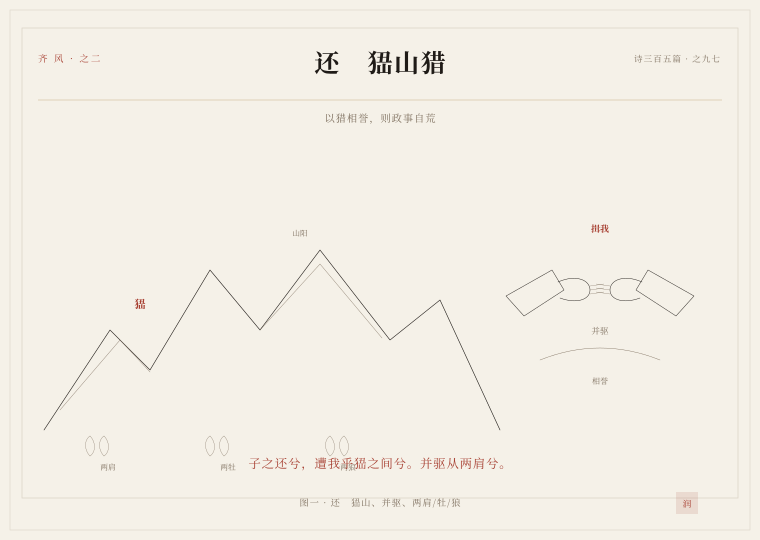

第九十七篇 还
齐风 · 之二 SJ097
朗读 · 普通话
依经文原文朗读，章次不读出；配古琴底乐，不改速、不加拖腔。全库同一音色（豆包 TTS），非播音员录制。
一 解题
诗三判：
- 谁在说：两个在峱山相遇的猎者。一个说“子之还兮”，一个答“揖我谓我儇兮”；三章都是猎者相誉之辞。
- 说什么事：三章换山间、山道、山阳，换两肩、两牡、两狼，换儇、好、臧；只“并驱”“揖我”不变。
- 为何编在此：096 写“朝”，097
写“野”。一朝一野，齐国上下都在“逐”；朝里催起，野外逐兽。
《毛序》：“《还》，刺荒也。哀公好田猎，从禽兽而无厌。国人化之，遂成风俗，习于田猎谓之贤，闲于驰逐谓之好焉。”
朱子《诗集传》：“赋也。还，便捷之貌。峱，山名。从，逐也。兽三岁曰肩。儇，利也。猎者交错于道路，且以便捷轻利相称誉如此，而不自知其非也，则其俗之不美可见，而其来亦必有所自矣。”
本库的看法：《还》是一首把“猎”写成“誉”的诗。
全诗没有一句“荒”，只写相遇、并驱、揖让、相誉。誉越密，荒越深。
三章不写猎获多少，只写“你便捷”“你美”“你盛”；当一国以善猎为贤，政事就已经在诗外荒了。
先辨五事：“还”读
xuán，是便捷轻利，不是“归还”；“峱”是齐国山名，读
náo；“肩”是三岁兽，不是肩膀；“牡”是雄兽，不是牡丹；“儇”是便利，不是“儇薄”。
二 经文
第一章
子之还兮，遭我乎峱之间兮。
并驱从两肩兮，揖我谓我儇兮。
第二章
子之茂兮，遭我乎峱之道兮。
并驱从两牡兮，揖我谓我好兮。
第三章
子之昌兮，遭我乎峱之阳兮。
并驱从两狼兮，揖我谓我臧兮。
分章：三章，章四句。
三 韵读
- 一章：还、间、肩、儇，元部。
- 二章：茂、道、牡、好，幽部。
- 三章：昌、阳、狼、臧，阳部。
读法：元部开阔，幽部深，阳部亮；由山间到山道到山阳，路越走越亮，誉越说越满。
四 字义与名物
- 还：便捷、轻利之貌；《韩诗》作“嫙”，好貌。
- 峱：齐国山名，在今山东临淄一带；之间/之道/之阳，山的里面、山道、山南。
- 并驱：两马并行驱驰；从：追逐。
- 肩：三岁兽；一说大豕。牡：雄兽。狼：齐山所出。
- 揖我：向我拱手；不是礼貌让路，是猎者相誉之礼。
- 儇：便利、轻捷。茂：美。昌：盛。臧：善。
五 今译
你多么便捷啊，在峱山之间遇到我。我们并驱追逐两只三岁兽，你向我拱手，说我利落。
你多么美啊，在峱山道上遇到我。我们并驱追逐两只雄兽，你向我拱手，说我好。
你多么盛啊，在峱山南遇到我。我们并驱追逐两只狼，你向我拱手，说我善。
六 章旨
- 一章：写“山间”与“两肩”。山间是相遇之地，两肩是所逐之兽；先遇后誉。
- 二章：写“山道”与“两牡”。由间到道，路更明；由肩到牡，兽更强。
- 三章：写“山阳”与“两狼”。由道到阳，到了山南；由牡到狼，兽更猛。誉到“臧”，已无可加。
- 总收：以猎相誉，则政事自荒。
诗不写荒，荒在“贤/好/臧”三个评语里。
七 诗教
- 兴：以峱山起兴。山是齐地，猎是齐俗；地一落，俗就成立。
- 观：观“国人化之”。上有所好，下必甚焉；一个“好”字，能变一国之贤愚。
- 群：猎者以并驱相群，以揖誉相群；群在野外，朝在何处？
- 怨：诗里没有怨，只有誉。誉是刺的反面；越誉，越见其非。
八 分寸与边界
- 不可把“还”当“归还”。它是便捷；一读归还，猎者就成了归人。
- 不可把“肩”当肩膀。它是三岁兽；一读肩膀，逐兽就成了勾肩搭背。
- 不可把“揖”当礼让。它是猎者相誉；一读礼让，诗就成雅集。
- 不可把“狼”当比喻。它是实猎之狼；一读比喻，齐风就成寓言。
- 不可把诗当赞美。三章句句誉，正是句句刺；一读赞美，毛序就落空。
九 存疑
- 诗旨：毛序“刺荒，哀公好田猎”；朱子“俗之不美可见”。一刺君，一刺俗；本库两存，以“相誉”读。
- “还”：毛传“便捷之貌”；《韩诗》作“嫙”，好貌。两读相近，皆不害“轻利”。
- “肩/牡/狼”：毛传“三岁曰肩”；一说“肩”为大豕。从“三岁兽”，才与“两牡/两狼”成列。
- “峱”：齐山名；一说“峱”为山间之通名。从齐山，地望才实。
- 作者与年代：毛序属哀公；朱子不言何公。是否哀公，无确证。
十 跨典
- 《老子》第五十五章：“驰骋田猎，令人心发狂。”——田猎之乐，能移人心；此诗以“誉”写“狂”。
- 《礼记·王制》：“天子诸侯无事，则岁三田。”——田猎有礼、有时；此诗写“无厌”，正见失礼。
- 《孟子·梁惠王上》：“今王田猎于此，百姓闻王车马之音……”——田猎与民同乐与否，是政之得失。
- 《诗本音》：三章元、幽、阳，见卷五；韵部按古韵推定。
十一 双卡与图
双卡八对：
| 还（便捷，xuán） |
还（归还，huán） |
| 峱（齐山名，náo） |
峱（山间通名） |
| 肩（三岁兽） |
肩（肩膀） |
| 牡（雄兽） |
牡（牡丹） |
| 儇（便利） |
儇（儇薄） |
| 茂（美） |
茂（茂盛草木） |
| 昌（盛） |
昌（昌国） |
| 臧（善） |
臧（收藏） |

图一 · 还 峱山、并驱、两肩
图二 · 还 三遇三誉
读图三处：
- 山三面：图一左山间，中山道，右山阳；一条山路自左向右，三段各放一兽。
- 两兽成对：图一两肩、两牡、两狼，皆画两两相从；不画猎者，只画被逐的兽与蹄迹。
- 誉在揖间：图二上“还/茂/昌”，下“儇/好/臧”，中间两只相揖的手；手一揖，誉就成立，荒就不见。